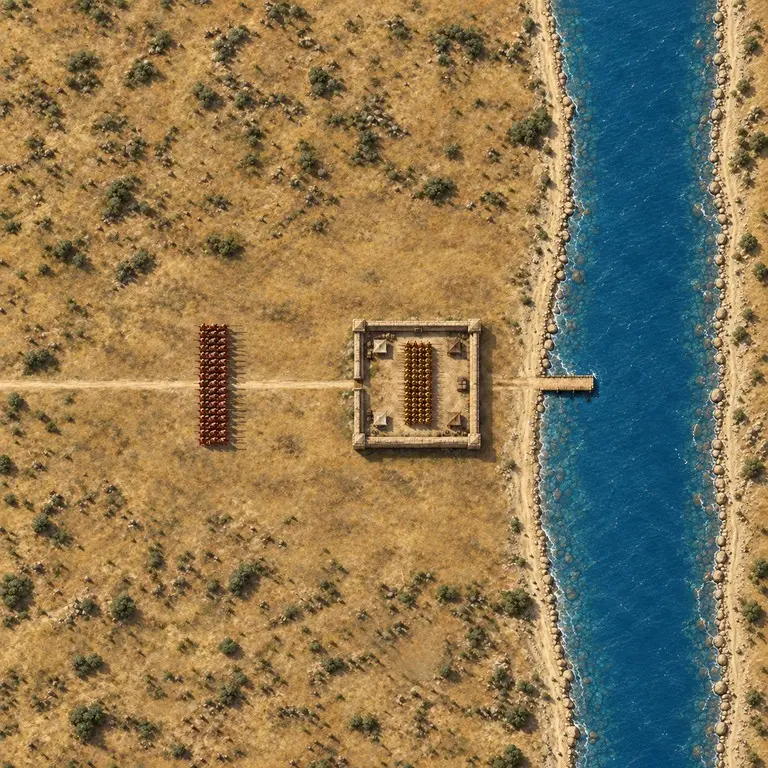
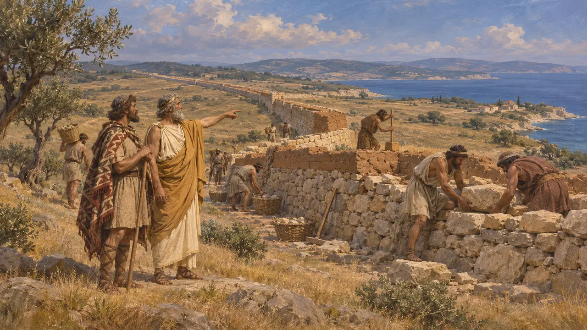
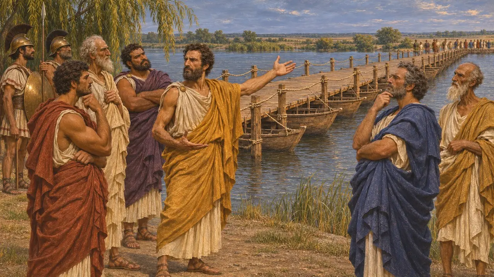
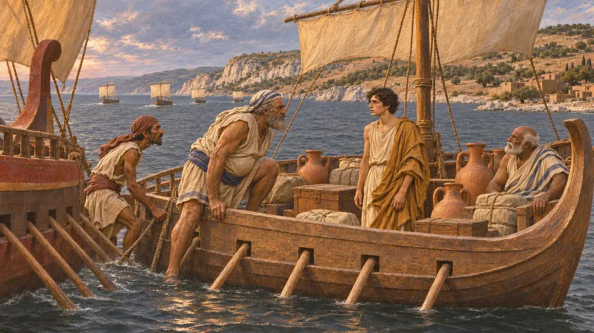
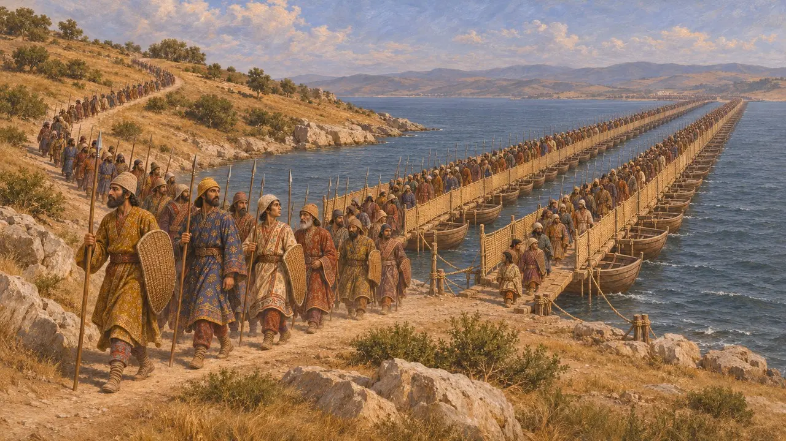
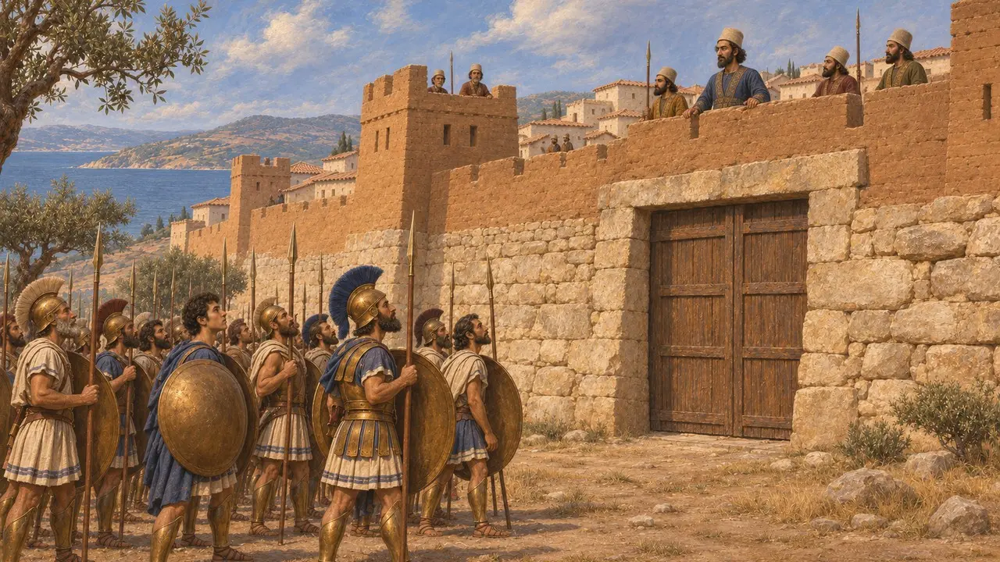

The Chersonese
The Thracian peninsula on the European shore of the Hellespont, ruled by Miltiades until 493 BCE
En el juego: Nivel 6: El Puente de Barcas, Mícala
The Chersonese, the "land-island", is the long peninsula of Thrace that forms the European shore of the Hellespont, today Gallipoli. Athenian lords ruled it in the 6th century, Miltiades last of them, under the Persian King. Xerxes' bridges reached its shore in 480 BCE, and its strongest town, Sestos, fell to the Athenians in 479 BCE.
En el juego: The Chersonese is the ground of the Sestos field and its briefing, and its ridge shapes the map. The Marathon chatter recalls Miltiades fleeing it, and a house of Sestos stands there.

An Athenian lordship
Relato antiguoHerodotus says the Dolonci, a Thracian people of the peninsula, invited the elder Miltiades from Athens to rule them. He built a wall across the neck of the peninsula, from Cardia to Pactye, to keep out raiders from the north. His nephew, the younger Miltiades, later took over the rule.
Herodotus 6.34-39

Miltiades at the Ister
En disputaMiltiades served Darius with the other Greek lords in the Scythian campaign of 513 BCE. Herodotus says he urged them to break the Ister bridge and leave the King to the Scythians. Many historians doubt this, since he went on ruling under Persia for years; the tale may have grown when he was tried at Athens.
Herodotus 4.137, 6.104

Flight in 493 BCE
Relato antiguoWhen the Phoenician fleet arrived after the fall of Miletus, Miltiades loaded five ships with his goods and fled to Athens. The Phoenicians caught one, with his son Metiochus on board, and took him to Darius, who gave him a house, land and a Persian wife.
Herodotus 6.41


Sestos and Protesilaus
Relato antiguoIn 479 BCE the Athenians besieged Sestos, held by the governor Artayctes with the Persians of the peninsula. Herodotus says Artayctes had plundered the shrine of the hero Protesilaus at Elaeus, at the peninsula's tip. When the town fell, the Athenians put him to death near where the bridges had stood.
Herodotus 9.114-120
Fuentes
- Herodotus 4.137
- Herodotus 6.34-41
- Herodotus 6.104
- Herodotus 7.33-58
- Herodotus 9.114-120